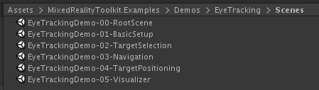
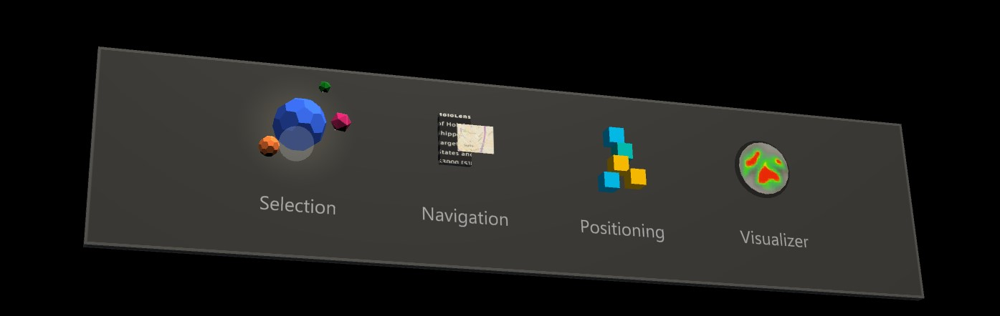
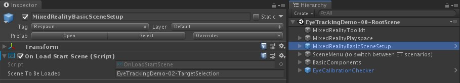
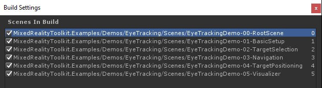
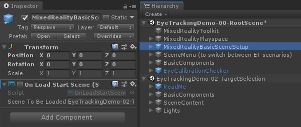

眼动跟踪示例 Eye tracking examples
本主题描述了如何通过构建MRTK眼动跟踪示例(Assets/MRTK/Examples/Demos/EyeTracking)来快速上手MRTK中的眼动跟踪。 这些示例让您体验我们的一种新的神奇输入功能:眼动跟踪! 演示包括各种用例，从基于眼睛的隐式激活到如何用语音和手输入无缝地结合您正在查看的信息。 这使得用户能够快速、毫不费力地选择和移动全息内容，只要看一个目标，说 'Select' 或做一个手势。 演示还包括一个用于在 slate上定向滚动、平移和缩放文本和图像的示例。 最后，提供了一个在2D slate上记录和可视化用户视觉注意力的示例。 在下面的部分中，你将会发现更多关于MRTK眼动跟踪示例包(Assets/MRTK/Examples/Demos/EyeTracking)中每个不同样本的详细信息:

下面的部分是对单个眼动跟踪演示场景的快速概述。 MRTK眼动跟踪演示场景被额外加载，我们将在下面解释如何设置。
眼动跟踪演示示例的概述
Eye-Supported Target Selection
支持眼动的目标选择
本教程演示了访问眼睛凝视数据以选择目标的便利性。 它包括一个微妙而强大的反馈的例子，以提供给用户目标被聚焦的反馈的信心，而不是压倒性的。 此外，还有一个简单的智能通知示例，在读取后自动消失。
总结:快速和毫不费力的目标选择使用眼睛，声音和手的组合输入。
Eye-Supported Navigation
支持眼动的导航
想象一下，你正在远处的显示器或电子阅读器上阅读一些信息，当你读到显示文本的末尾时，文本会自动向上滚动以显示更多内容。 或者神奇地直接飞向你正在看的地方? 以下是本教程中展示的一些关于眼动支持的导航的示例。 另外，还有一个3D全息图无需手势进行旋转的例子，让它们根据你当前的眼睛聚焦的焦点自动旋转。
总结:滚动，平移，缩放，3D旋转 使用眼动，声音和手输入组合。
Eye-Supported Positioning
支持眼动的放置
本教程展示了一个名为Put-That-There的输入场景，可以追溯到1980年代早期麻省理工学院媒体实验室的眼睛、手和声音输入。 这个想法很简单:利用你的眼睛快速选择和放置目标。 只要看一张全息图，说 'put this'，看你想放它的地方，说 'there!' 为了更精确地定位你的全息图，你可以使用额外的输入从你的手，声音或控制器。
总结:用眼睛、声音和手输入(拖放)来放置全息图。眼睛支持滑块使用眼睛+手。
Visualization of visual attention
视觉注意力的可视化
基于用户所看到的位置的数据是一个非常强大的工具，用于评估设计的可用性，并识别高效工作流程中的问题。 本教程将讨论不同的眼动可视化以及它们如何满足不同的需求。 我们提供了记录和加载眼球跟踪数据的基本示例，以及如何可视化它们的示例。
总结:在slate上的二维注意力图(heatmap)。记录和回放眼动数据。
建立MRTK眼动跟踪样本
先决条件
注意，使用设备上的眼球追踪样本需要一个HoloLens 2 以及一个应用程序示例包，构建时带有"Gaze Input(凝视输入)"功能(在包的AppXManifest上)。
为了在设备上使用这些眼动跟踪样本，请务必跟随 这些步骤 在Visual Studio中构建应用程序之前。
1. 加载 EyeTrackingDemo-00-RootScene.unity
EyeTrackingDemo-00-RootScene是包含所有核心MRTK组件的基础(root)场景。 这是您首先需要加载的场景，您将从这里运行眼动跟踪演示。 它提供了一个图形化的场景菜单，可以让你轻松地在不同的眼动跟踪样例之间切换，这些样例将会被额外加载。

根场景包括一些核心组件，它们将在额外加载的场景中持久存在，比如MRTK配置的配置文件和场景摄像机。 MixedRealityBasicSceneSetup(见下面的截图)包含一个脚本，它将在启动时自动加载所引用的场景。 默认情况下，这是 EyeTrackingDemo-02-TargetSelection。

2. 添加场景到build menu
要在运行时加载附加场景，必须将这些场景添加到_Build Settings -> Scenes in Build_ 菜单。 重要的是，根场景作为列表中的第一个场景显示:

3. 在Unity编辑器中播放眼动跟踪示例
在添加眼动跟踪场景到Build Settings和加载 EyeTrackingDemo-00-RootScene 之后，有最后一件事你可能想要检查:附加到 MixedRealityBasicSceneSetup GameObject的 'OnLoadStartScene' 脚本是启用的吗?这是为了让根场景知道首先加载哪个演示场景。
让我们开始!点击 "Play" ! 您应该会看到一些宝石出现，场景菜单在顶部。

你还应该注意到在游戏视图的中心有一个半透明的小圆圈。 它可以作为你的 模拟眼睛注视 的指示器(光标): 只需按下鼠标右键并移动鼠标就可以改变其位置。 当光标悬停在宝石上时，你会注意到它会吸附到当前看到的宝石的中心。 这是测试当 "观察" 目标时是否按预期触发事件的好方法。 请注意，通过鼠标控制的 模拟眼睛注视 是对我们快速而无意的眼球运动的一个相当糟糕的补充。 但是，在将设计部署到HoloLens 2设备之前测试基本功能是很好的。 回到我们的眼动跟踪样本场景:宝石只要被观察就会旋转，并且可以被"观察"它和…
- 按 Enter (模拟说"select")
- 对着麦克风说"select"
- 当按 Space 显示模拟的手输入时，点击鼠标左键模拟按压
我们在眼动支持的目标选择教程中详细描述了如何实现这些交互。
当将光标移到场景的顶部菜单栏时，您会注意到当前悬浮的项目将会微妙地突出显示。 您可以通过使用上面描述的提交方法之一(例如，按 Enter )来选择当前突出显示的项。 通过这种方式，您可以在不同的眼动跟踪示例场景之间切换。
4. 如何测试具体的子场景
在处理特定场景时，您可能不希望每次都遍历场景菜单。 相反，当按下 Play 按钮时，你可能想要直接从你当前正在工作的场景开始。 没问题!以下是你可以做的:
加载 root 场景
在 root 场景中，禁用 'OnLoadStartScene' 脚本 3.将下面描述的一个眼动跟踪测试场景(或者其他场景) 拖放到 你的 Hierarchy 视图中，如下面的截图所示。

按下 Play
请注意，像这样加载子场景是不持久的: 这意味着，如果您将应用程序部署到HoloLens 2设备，它将只加载根场景(假设它出现在Build Settings的顶部)。 另外，当您与他人共享项目时，子场景不会自动加载。
现在您已经知道了如何让MRTK眼动跟踪示例场景工作，让我们继续深入了解如何用眼睛选择全息图:支持眼动的目标选择。